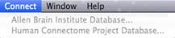

Connect Menu
The Connect Menu contains links to
external databases that are useful for Workbench users.
Greyed-out entries indicate that the links are currently not
active, but that a future version of Workbench will include an
interface for the databases listed.
